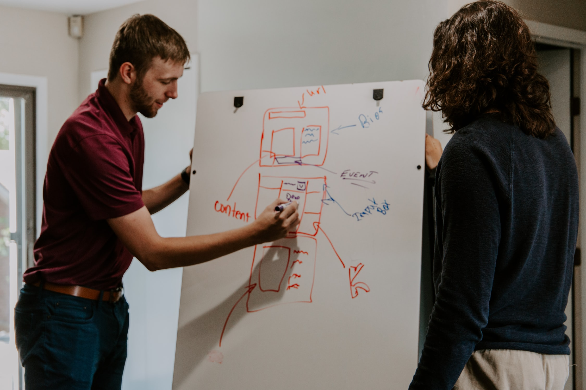
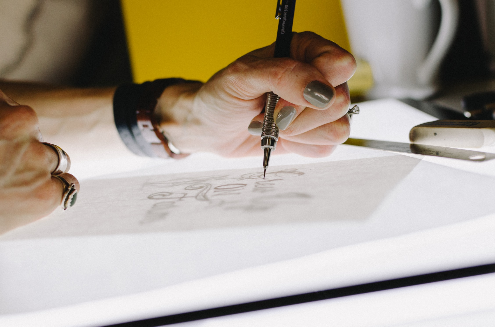

This site was created for my SMAD 307 course that I am taking at James Madison University. I decided to make this a personal website that would enable the reader to learn more about me and get an overall well rounded image of what my life and career aspirations entail.
We were given a lot of freedom in regards to what we could include in this website. I chose to use it as a sort of online portfolio, where I can display my photography, design and coding projects that I have completed over my time in the Media Arts and Design program.
I learned a LOT about both HTML and CSS while completing this project. By drawing out my ideas first and then figuring out how to write the code to make it happen, I had a lot of time to play around with things and truely understand how all of the different functions work. I used W3 Schools frequently when trying to both trouble shoot problems I was facing as well as discover how to make my web pages look the way I wanted them to.
I knew straight away that I wanted my website to be sleek and simplistic, with a small pop of color and I decided to use the combination of black and lavendar to carry out this vision. I began my design process by drawing sketches of each web page on a piece of paper, and plannin out how I wanted everything to look. I wanted to include both digital illustrations and photographs to give the website more personality and make myself seem more accessible.
As mentioned earlier, I have learned a lot about HTML and CSS. I have also learned a lot about the trial and error involved in the creative process. By having such a long amount of time to complete this assignment, I had plenty of time to try out new layouts and color schemes before deciding on the one I wanted to keep. This was a great way for me to explore not only my own creative ideas but how to malipulate code to get the result that you want.